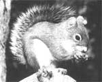

REPORT FROM AMERICA
The Mount Graham red squirrel is not the only issue on Emerald Peak.
So is the fate of rare plants.
EMERALD PEAK, AZ- The sky is so clear you're sure it will crack and descend in a cataract of starlit fragments - you speak too sharply in the night. And that is the problem up on Mount
Graham, located in the Coronado National Forest, a couple of hours northeast of the neon lights of Tucson, Arizona. It is an ideal place to look at the stars. And on one of Mount Graham's several peaks, Emerald Peak, the University of Arizona wants to build a $200 million observatory consisting of seven telescopes. To this eight-acre island of science would also troop a holy alliance of astronomers from West Germany, Italy and two of the most venerable and revered institutions in the world, the Smithsonian and the Vatican.
The trouble is that Emerald Peak is inhabited already by two other entities, one invisible and the other nearly so. Invisible to all but the nearby San Carlos Apaches are the mountain spirits who taught the tribe to hunt. Nearly invisible until recently are some 100 members of a subspecies known as the Mount Graham red squirrel. In addition, the peak is home to several species of plants so rare they don't even have names yet.
How muddy can waters get in the more noble affairs of man? Few of us will deny that the goals of astronomy are pure: to see back in time to the faintest objects in the expanding universe, to look in on the origins of the creation. That the Vatican itself is involved in a dialogue between science and theology puts a wondrous spin on the whole affair. But the Mount Graham red squirrel is protected under the secular laws of the United States, in particular the Federal Endangered Species Act, and environmentalists fear that institutionalized stargazing here could well push the squ'rrel--and some of the rare plants-into that fearful extinction abyss. So activists are furious.
Acting on the advice of the U.S. Fish and Wildlife Service, Congress approved the project in 1988, and construction began. Demonstrations were held at the Smithsonian, and Earth First!- flung themselves before advancing bulldozers. As of March 19go, a suit brought by the Sierra Club and other environmental groups to seek an injunction against further construction was still pending.
WHAT a mess! The Smithsonian, for example, a leader in both astronomy and natural history, is also currently in the business of currying the trust of the Native American community, the better to get its new National Museum of the American Indian off the ground. The Vatican, in a sense to atone for its less-than-Solomonic treatment of Galileo, is seeking a rapprochement with the old fellow's science. Meanwhile, the Pope himself is in the position of having blessed this project but also having condemned both the degradation of ecosystems and the rampant and unconsidered spread of science and technology in an environmental message delivered earlier this year.
Meanwhile, University of Arizona astronomers--sounding just a bit like your typical developer in what is happily called "multiple use of national forestlands"--say the mountain has already been logged and is used each summer by, yes, a Bible class. (Actually, they originally planned to build the observatory on the deforested section of nearby High Peak, but the site was changed to heavily wooded Emerald Peak.) The ecologists at the university, however, decry the flouting of environmental laws and principles. And the Apaches mutter veiled threats, suggesting that, wait and see, the old mountain gods have their own forms of redress.
Ironically, one $60 million telescope being readied for Emerald Peak-two mirrors of eight meters' diameter each-is called the Columbus Project. And at the same time, the Hubble Space Telescope is scheduled for a shuttle launch, a multimillion-dollar project that is justified on the grounds that it win render earthbased astronomy largely passe.
To further disturb the clear atmosphere on the 10,700-foot Emerald Peak, the litigation process has evidently turned up some hankypanky worthy of the sleaziest land grab schemes for which the SouthWest is famous. Apparatchiks in the Fish and Wildlife Service are accused of leaning on their own field biologists, who were allegedly ordered to conclude before the fact-or regardless of fact-that the squirrels and the telescopes could peacefully coexist on Emerald Peak. With this report in hand, Congress gave the project the go-ahead. But now the field biologists, trusting in their own eyes and their own data, have spilled the beans to the squirrels' lawyers.
If these allegations are true, one can add to one's instinctive hopes that the squirrels win the hope that the apparatchiks; be deported for so flagrant a breach of the public trust. Not to mention the rape of the integrity of science. And one can also reasonably wonder whether the astronomers--who are themselves scientists-would fully enjoy a win brought about in part by the suborning of science.
BUT instinctive hopes, on either side of the issue, may beg a yet larger question. The search for answers about the origins of the universe remains a noble put suit. And, in a world where wildlife biologists talk of triage, we don't really know how important the Mount Graham red squirrel is in the scheme of things. In fact, however muddied the question is by the clash of religions, it finally comes down to a scientific issue on Emerald Peak.
And the decision lies not in what all we true believers on one side or another know, but in our ignorance.
The astronomers are seeking to push back the barriers of ignorance about the fundamental questions (you'll note that they and the physicists have sneaked up and laid claim to "the fundamental questions"). But we are also fundamentally ignorant about the slightly different universes other creatures inhabit, and fundamentally ignorant about how to get along with them (or not), never mind the little problem we have of getting along amongst ourselves. These are preeminently ethical questions, now of a planetary scale and urgency, and our decisions in this realm are still based upon a sandy underpinning of ignorance...but there is an ethics to ignorance.
There was a time B.G. (Before Galileo) when our ignorance of astronomical affairs had ethical weight because we were engaged on a transactional basis with the stars and other inhabitants of the heavens-angels and other role models. There were ethical values there then. But modern astronomy is different. Further details of the Big Bang and its aftermath are almost certainly going to remain, in the foreseeable future, morally neutral. As currently practiced, astronomy can dispel no ignorance that presently stands in the way of achieving any sort of ethical wisdom here on earth.
We already know, thanks in part to astronomy, that we are tiny and alone, we and our fellow creatures, padding about in a thin film of biosphere and, for any practical purpose, the only ones anywhere saddled with the chore of working out the business embodied in the term life. Until we arrived on the scene, life too was a morally neutral affair. It is only we who assess and assign values to anything, and so we find ourselves caught up in a dimly understood web, ignorant of what our place in nature should be.
The ultimate answers may not lie with the Mount Graham red squirrel at all. But they also definitely do not lie on Arcturus or in the more precise parsing of lifeless signals from some quasar spinning idiotically at the edge of the universe, pulsing emissions that originated millions and millions of years B.G., indeed long before life itself arose. On the other hand, every bit of scientific insight and diminution of ignorance about the biosphere can only be regarded as useful. Every bit of restraint we practice to provide ourselves with time and knowledge to reflect on the value of such a thing as a subspecies, and time to understand our place in nature, is presumably positive,
The showdown at Emerald Peak puts into sharper focus-as well as symbolic clarity--a question surrounded by a great deal of murk. It involves the prioritization (an ugly word for evaluation) of our ignorance. What do we need to know first? This is also a kind of triage, and scientists don't like to hear about it (even when it is practiced from within the priesthood, which it is every day, budgets being what they are).
NEVERTHELESS,scientists should be made aware of the fact that we-us folks here-think the fundamental questions concern life on its only known home, the earth, and when there is a choice to be made, as there is on Emerald Peak, the choice is obvious. Life on this planet must be given every chance to win.
And if scientists at a university, of all places (never mind the Smithsonian Institution and the Vatican), cannot see the difference up in the crystalline air of Mount Graham's Emerald Peak, then how the hell can we expect unclouded vision from politicians, public servants and the brigadiers of industry?
|
 |
|
|